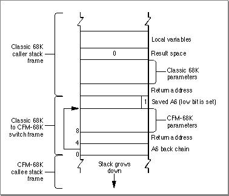

Calling CFM-68K Code From Classic 68K Code
Calling CFM-68K code from a classic 68K routine is very similar to calling PowerPC code from emulated classic 68K code. However, since no virtual machine switch is needed, the switch frame is simpler.When the Mixed Mode Manager is invoked through the trap in the routine descriptor, it sets up a classic 68K to CFM-68K switch frame before calling the CFM-68K routine. Figure 6-5 shows the switch frame.
Figure 6-5 A classic 68K to CFM-68K switch frame
- Note
- The low bit of the saved A6 register is set to indicate that a switch frame is on the stack. This is analogous to the set low bit of the back frame in the classic 68K to PowerPC switch frame.

After returning from the called routine, the Mixed Mode Manager copies the return value to its proper location (in a register or on the stack) and pops the stack frame and return address off the stack. If the calling routine uses Pascal calling conventions, the calling routine's parameters are also popped off the stack. Control then passes back to the classic 68K code.